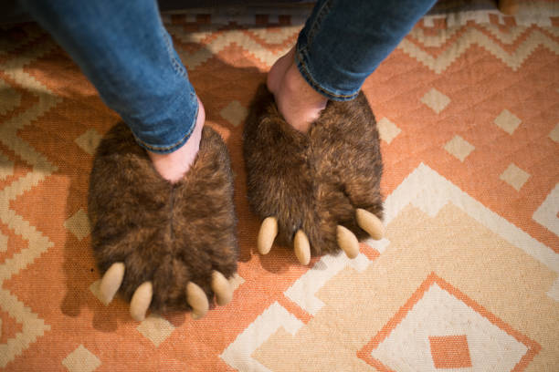
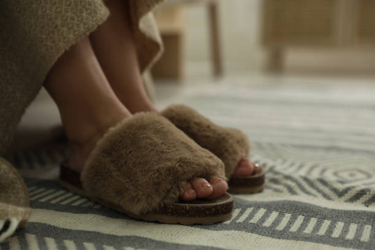

Las Mejores Pantuflas
Instrucciones
Las pantuflas son un tipo de calzado que ha sido popular durante siglos, y no es difícil entender por qué. Son cómodas, cálidas y suaves, lo que las convierte en la opción perfecta para aquellos que buscan relajarse en casa después de un largo día de trabajo o simplemente quieren mantener sus pies calientes durante los meses más fríos. Pero ¿cómo se fabrican estas cómodas pantuflas? En este artículo, descubrirás el proceso de fabricación de pantuflas desde el principio hasta el final.
Uso Especifico De Las Pantuflas
Las pantuflas son conocidas por ser un calzado para uso en interiores, pero tienen una variedad de usos específicos que las hacen indispensables en ciertas situaciones. Por ejemplo, las pantuflas de viaje son populares entre los viajeros que necesitan algo cómodo y fácil de poner y quitar en los aviones o en los hoteles. Las pantuflas de spa son suaves y cómodas, y se utilizan en spas y centros de bienestar para mantener los pies calientes y protegidos mientras se realizan tratamientos. Además, las pantuflas con suelas antideslizantes son ideales para personas mayores o con movilidad reducida, ya que proporcionan una mayor estabilidad en superficies resbaladizas.
Conclucion
Las pantuflas son un tipo de calzado cómodo y cálido que se ha popularizado en todo el mundo. El proceso de fabricación de pantuflas es complejo y varía según el fabricante, pero en general incluye procesos como el diseño, corte, costura, montaje y acabado. Los materiales utilizados en la fabricación de pantuflas incluyen tejidos, suelas, forros y plantillas. Algunos de los principales fabricantes de pantuflas a nivel global incluyen UGG, Crocs y Sorel. Esperamos que este artículo haya sido informativo y te haya dado una mejor comprensión del proceso de fabricación de pantuflas.